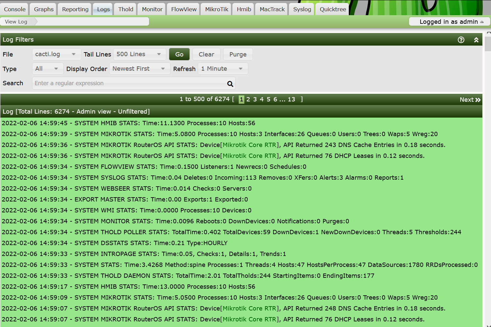

The Cacti Log is where all Cacti statistics, warnings, errors and other log messages are sent to. Cacti can optionally log some information to your syslog or event log depending on your OS type.
The Cacti Log is by default ordered from newest event to oldest event, and the Cacti Log is rotated by Cacti itself once a day.
If you have the User Level permission, you can view any available Cacti Standard Output or Standard Error log. If you have the Administrative level access, you may additionally purge information from the logs.
As a Cacti Administrator, you have the ability to filter out some message types from users for example, one message type that people like to filter out is "AUTH" messages that tell you who is logging into the Cacti Web Site. You can edit these removal rules from the Cacti Settings page.
An image of the Cacti Log file can be seen below.

What we like to see in the Cacti Log is a lot of Green, which means good. By default, WARNINGS are yellow, and ERRORS are red. But there are other types of messages that highlight differently. Generally, you can filter for these message types. The filters include:
The Cacti Log Types include the following:
Stats - Anything that includes the word STATS
Warnings - Anything that includes the word WARNING
Warnings++ - Anything of each WARNING, ERROR, DEBUG, and SQL this one is good for debugging, and it will include most important errors to the Cacti Administrator.
Errors - Anything that includes the word ERROR
Errors++ - Anything of each ERROR, DEBUG, and SQL
Debug - Anything that includes the word DEBUG
AutoM8 - Anything that includes the word AUTOM8. These message come from Cacti automation of Devices, Graphs, and Trees
Non Stats - Anything that does not include the word STATS.
Boost - Anything that contains the word BOOST.
Device Up/Down - Any device Up/Down notification including t hose that come from Thold or Monitor Plugins.
Recaches - Any Device Recache Events.
Threshold - If the Thold plugins is installed, any of it's threshold breach and restoration events.
As previously mentioned, the Cacti log has two permission levels, the User Permission level will not include the Purge button, and can have some information hidden from public view whereas the Administrative view includes all Log messages and a Purge* button.
Copyright (c) 2004-2024 The Cacti Group